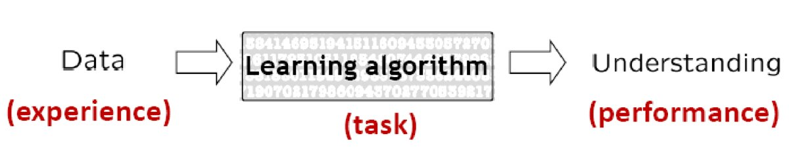
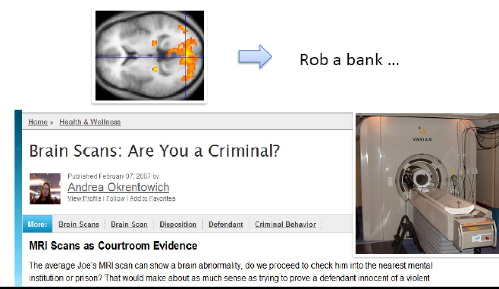
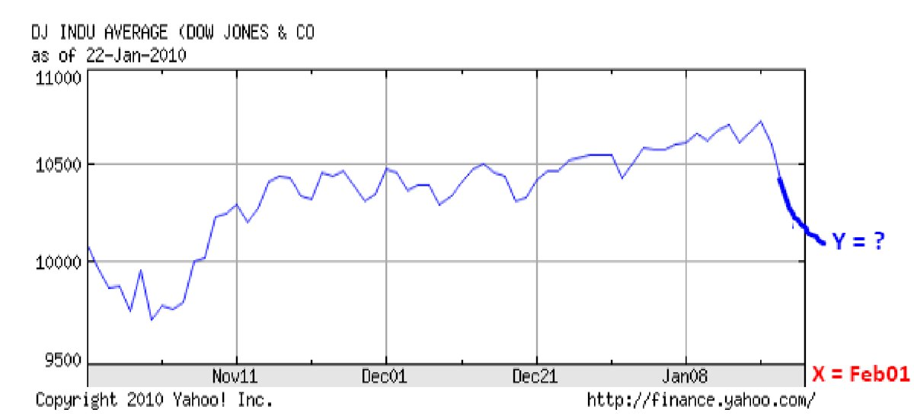
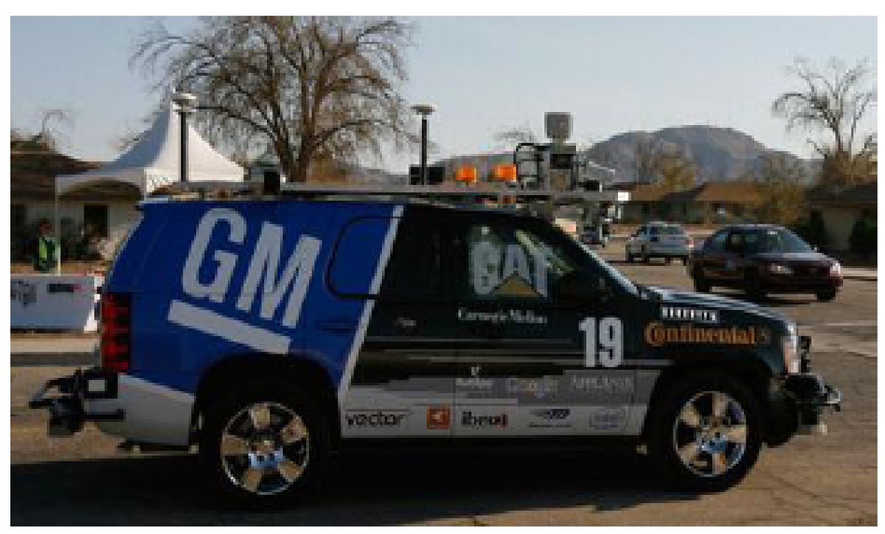
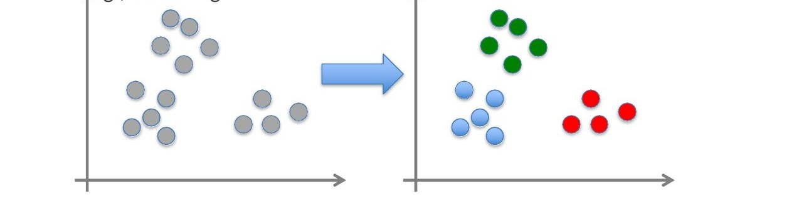
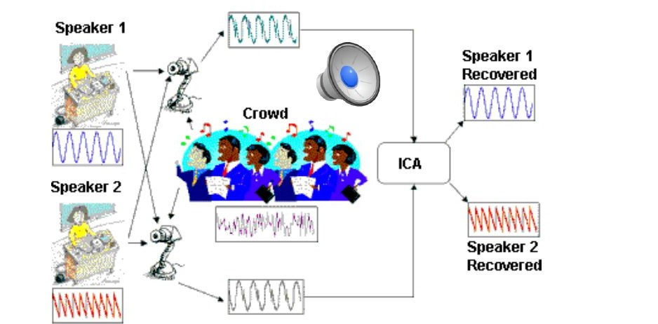
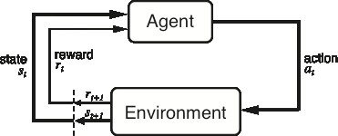

ML-01: What machine learning is, where it is used, and the kinds of learning
Department of Computer Science and Engineering East West University, Dhaka, Bangladesh
Raihan Ul Islam, Associate Professor, Dept. of CSE, East West University
In one paragraph. This lecture asks what machine learning is and where it is already in use, then separates the four kinds of learning (supervised, unsupervised, semi-supervised, reinforcement) by what the training data contains. It ends with how a dataset is organised into examples, features and a class label, and how the training, validation and test sets are used to fit a model, choose its hyperparameters, and report an honest accuracy. Use the tabs to move between sections.← Back to course material
1. What is Machine Learning?
A Few Quotes
Slide 6
“A breakthrough in machine learning would be worth ten Microsofts.”Bill Gates, Microsoft
“Machine learning is the next Internet.”Tony Tether, Director, DARPA
“Machine learning is going to result in a real revolution.”Greg Papadopoulos, ex-CTO, Sun
What is Machine Learning?
Slide 7
In 1959, Arthur Samuel, a pioneer in the field of machine learning (ML), defined it as the
“field of study that gives computers the ability to learn without being explicitly programmed”
What is Machine Learning?
Slide 8
Study of algorithms that
improve their performance
at some task
with experience

Machine Learning in Action
Slide 9
Decoding thoughts from brain scans

Machine Learning in Action
Slide 10
Stock market prediction

Machine Learning in Action
Slide 11
Cars navigating on their own

The self-driving SUV that took 1st place in the DARPA Urban Challenge
Machine Learning in Action
Slide 12
Helicopters can learn aerial tricks by watching other helicopters perform the stunts first
Data: a set of data records (also called examples, instances or cases) described by
k attributes: A1, A2, …, Ak
a class: each example is labelled with a pre-defined class
Goal: to learn a classification/regression model from the data that can be used to predict the classes/values of new (future, or test) cases/instances.
Supervised Learning — Classification
Slide 22
Assign an object/event to one of a given finite set of categories (discrete or categorical values).
Medical diagnosis
Credit card applications or transactions
Fraud detection in e-commerce
Worm detection in network packets
Spam filtering in email
Recommended articles in a newspaper
Recommended books, movies, music, or jokes
Financial investments
DNA sequences, handwritten letters
Astronomical images
Regression
Slide 23
Predicting a numeric value (continuous value):
Predicting weather
Predicting the stock market
Predicting monthly or yearly product sales
Unsupervised Learning
Slide 24
Given x1, x2, …, xn (without labels)
Output the hidden structure behind the x’s — e.g., clustering

Unsupervised Learning
Slide 25
Independent component analysis (ICA) — separate a combined signal into its original sources

Reinforcement Learning
Slide 26
Given a sequence of states and actions with (delayed) rewards, output a policy
A policy is a mapping from states → actions that tells you what to do in a given state
Examples:
Credit assignment problem
Game playing
Robot in a maze
Balance a pole on your hand
The Agent–Environment Interface
Slide 27

Agent and environment interact at discrete time steps t = 0, 1, 2, …
Agent observes state at step t: st ∈ S
produces action at step t: at ∈ A(st)
gets resulting reward rt+1 ∈ ℝ, and resulting next state st+1
Input columns (Alt, Bar, Fri, Hun, Pat, Price, Rain, Res, Type, Est)
Features, variables, attributes — e.g. Alternative, Hungry, Patrons, Reservation, Wait time
Output column (WillWait)
Class, label
Find a hypothesis (called a “model”) to predict the class given the features.
Training a Model
Slide 31
Models are “trained” (learned) on the training data (a part of the available data).
Models have
Model parameters (the model): e.g., probabilities, weights, factors.
Hyperparameters: choices for the algorithm used for learning. E.g., learning rate, regularization λ, maximal decision-tree depth, selected features.
The “Learner” (algorithm) tries to optimize the model parameters given user-specified hyperparameters.
We can learn models with different hyperparameters, but how do we know which set of hyperparameters is best?
Training Data
Validation Data
Test Data
Hyperparameter Tuning / Model Selection
Slide 32
Learn models using the training set and different hyperparameters.
Often a grid of possible hyperparameter combinations or some greedy search is used.
Evaluate the models using the validation data and choose the model with the best accuracy. Selecting the right type of model, hyperparameters and features is called model selection.
Learn the final model using all training and validation data.
Notes:
The validation set was not used for training, so we get generalization accuracy.
If no model selection is necessary, then no validation set is used.
Training Data
Validation Data
Test Data
Testing a Model
Slide 33
After the model is selected, the final model is evaluated against the test set to estimate the final model accuracy.
Very important: never “peek” at the test set during learning!
Training Data
Validation Data
Test Data
How to Split the Dataset
Slide 34
Random splits: split the data randomly in, e.g., 60% training, 20% validation, and 20% testing.
k-fold cross validation: use training & validation data better
split the training & validation data randomly into k folds.
For k rounds hold 1 fold back for testing and use the remaining k − 1 folds for training.
Use the average error/accuracy as a better estimate.
Some algorithms/tools do that internally.
LOOCV (leave-one-out cross validation): k = n, used if very little data is available.
Training Data
Validation Data
Test Data
Important Concepts
Slide 35
Data: labeled instances, e.g. emails marked spam/ham
Training set
Held-out set (sometimes called validation set)
Test set
Features: attribute–value pairs which characterize each x
Experimentation cycle
Select a hypothesis f to best match the training set
(Tune hyperparameters on the held-out set)
Compute accuracy of the test set
Very important: never “peek” at the test set!
Evaluation
Accuracy: fraction of instances predicted correctly
Overfitting and generalization
Want a classifier which does well on test data
Overfitting: fitting the training data very closely, but not generalizing well
We’ll investigate overfitting and generalization formally in a few lectures